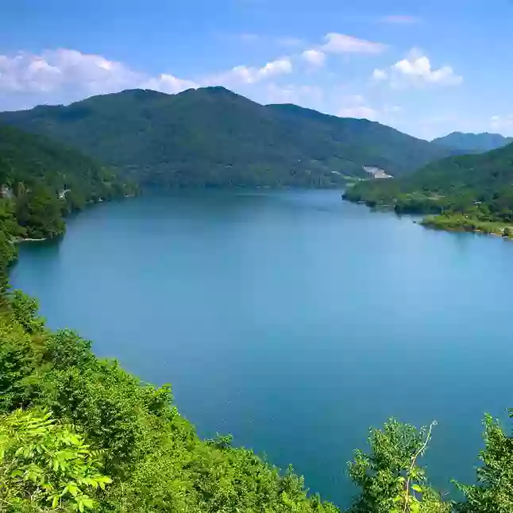
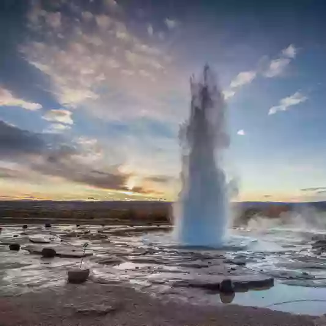
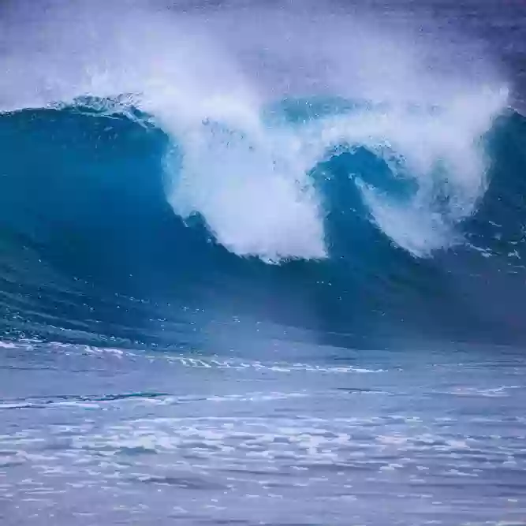

Glacier is the polar or alpine areas exist on the surface for many years and has a natural ice body along the ground motions. Ice snow for many years, after compaction, recrystallization, then freeze into ice. About 1/10 of the land area of glaciers on earth, and 4/5 of the fresh water resource is stored in the glacier.
1

Surface water is the floorboard of the dynamic water and static water on land surface, which belongs to dynamic water lakes, rivers, and marshes, is the most important and most direct source of water supply, the earth's ecosystem system is to maintain stable operation of the blood.
2

Groundwater as an important bodies of water, the earth has close relationship with human society. Groundwater storage is in the ground to form a large reservoir, with its stable water supply conditions, good water quality, become the human society of water less than nuuk.
3

Ocean is the world's most extensive water, center part of the ocean called the, edges as the sea, and communicate with each other of unified bodies of water. Contains more than one billion three hundred million and five thousand cubic kilometers of sea water, accounting for about 97% of the total water on the earth, and can be used for human consumption accounts for only 2%.
4